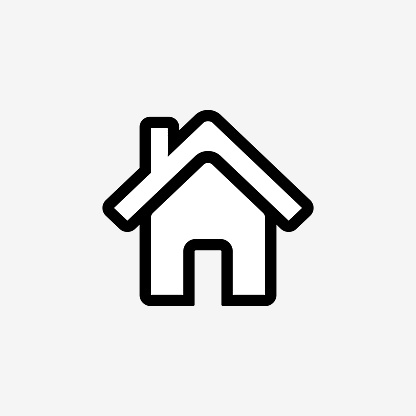

Français
I) L’analyse de texte
Pour réussir cette partie, il faut :
bien lire le texte et les consignes (plusieurs fois si nécessaire) pour bien comprendre ce qu'on vous demande.
Vous rédigerez une réponse construite en intégrant des citations du texte pour justifier ce que vous dites.
relisez-vous en vérifiant que vous avez bien mis toutes les réponses en vous aidant du nombre de points attribués à cette question.
II) Dictée
Pour réussir cette partie il faut:
Bien écouter la première lecture.
A la deuxième lecture, vous écrirez tout le passage dicté.
A la troisième lecture, vous vérifierez que vous avez bien noté tous les mots et bien mis la ponctuation.
III) Rédactions
Imagination
Pour réussir cette partie il faut:
il faut faire un champ lexical sur un brouillon ayant pour thème le thème du sujet dans le but d’avoir un vocabulaire varié.
Faire un plan en 3 parties de la rédaction qu’on veut faire (situation initiale/action(s)/fin).
Vérifier que votre rédactions rentre dans toutes les contraintes ( temps, forme, sujet)
recopier la rédaction de manière propre.
Argumentation
Pour réussir cette partie il faut:
il faut faire une liste de tous les exemples (œuvres littéraires, films, exemples du quotidien…) qui nous serviront pour écrire notre rédaction.
On réalise ensuite un tableau à double entrées ( correspondants aux exemples qu’on va mettre dans la thèse et aux exemples qu’on va mettre dans l'antithèse ).
On écrit nos idées sur le brouillon et la façon dont on va relier notre manière de penser aux oeuvres littéraires
on recopie notre rédaction sur la copie